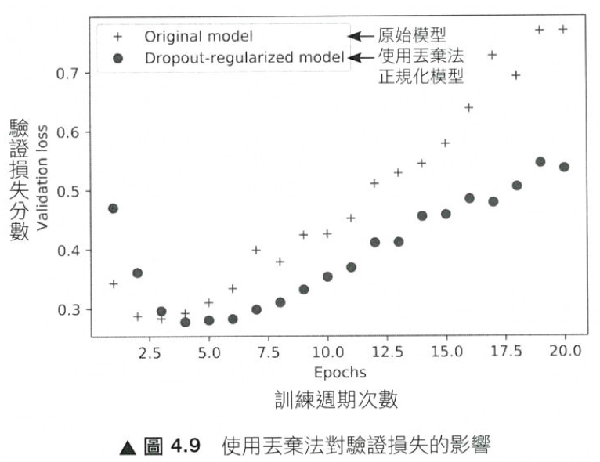
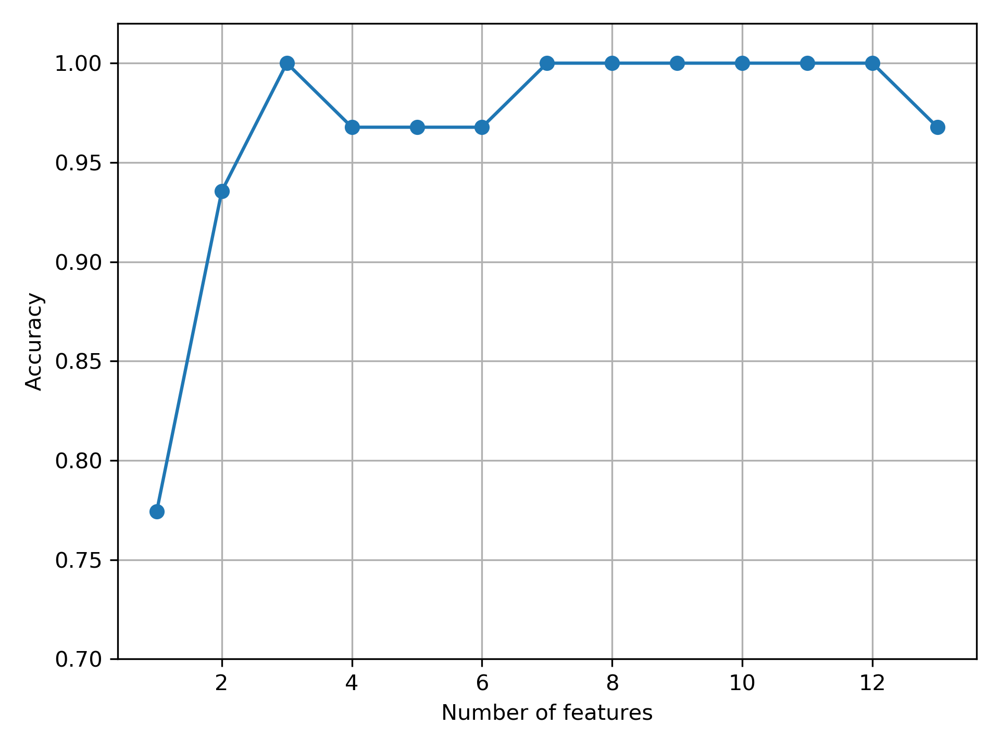

overfitting
Table of Contents

機器學習的本質即在於 最佳化 與 普遍性 之間的拉扯，最佳化(optimization)是指調整模型使得模型能在訓練資料上獲得最佳表現的過程；而普遍性(generalization)是指已訓練過的模型對從未見過的資料的預測能力。在訓練之初，最佳化和普遍性是高度相關的，訓練資料的損失越低、測試資料的損失也越低。此時，模型仍處於低度擬合狀態，仍有進步空間；在訓練資料經過一定回合(epoch)的訓練後，普遍程度的改善幅逐漸停止，驗證指標隨之停滯然後開始變差，於是模型開始 overfitting。也就是說，模型已經學習了一些訓練集特有的模式，但這些特有模式根本和新資料不相關、甚或會誤導對新資料的預測。
為了防止模型在訓練資料中學到錯誤或不相關的模式，最好的解決方案是取得更多訓練資料，如果無法做到這一點，次佳的解決方案是調配模型儲存的訊息量或者限制儲存資訊的類型或數值，如果一個神經網路只能記住少量的模式，那麼優化過程將迫使它專注於最顯著的那些模式，而不會去記住那些不相關的資訊，如此才能適應從未見過的新資料。
這種週配或限制模型資訊(即參數)以對抗 overfitting 的方式稱為常規化(regularization)，幾個常見的常規化技術如下：
- 縮減神經網路的大小
- 加入權重常規化 (weight regularization)
- 丟棄法 (dropout)
1. 縮減神經網路的大小
即減少模型可用來學習的參數數量(包含網路的層數和每層的神經元個數)，在深度學習中，模型中可學習參數的數量(權重數量)通常被稱為容量(capacity)。直覺上，有更多參數的模型具有更多的記憶能力(memorization capacity)，因此可以很容易在訓練樣本與其目標之間做出完美的對應，但卻沒有任何適應學習的能力。例如，我們可以建立具有 500000 個參數的模型來輕鬆學習(記憶)MNIST 訓練集中的每個數字所屬類別，但這種模型對於預測新的數字圖案毫無用處。
此外，如果神經網路的記憶資源有限，則無法輕易地直接在訓練樣本與目標之間做出對應，因此，要讓損失最小化，神經網路必須採用萃取過的資料表示法，以建立對目標的預測能力；另一方面，我們仍須讓神經網路擁有足夠的參數，以免模型 underfitting。也就是說，我們必須在容量過大(too much capacity)和容量不足(not enough capacity)之間取得平衡。
然而，到目前為止還沒有有效的公式來確定網路最佳的層數和神經元數，我們必須實際在神經網路進行多次評估(在驗證集上，而非測試集)，以找到正確的模型大小。我們通常會從較少的層數和 units 數開始，再逐漸增加層的 units 數或增加新層數，直到驗證損失不再進步為止。
以 imdb 的例子來看，原本的網路模型如下：
1: model = models.Sequential() 2: model.add(layers.Dense(16, activation='relu', input_shape=(10000,))) 3: model.add(layers.Dense(16, activation='relu')) 4: model.add(layers.Dense(1, activation='sigmoid'))
如果我們將每一層的神經元數量縮小：
1: model = models.Sequential() 2: model.add(layers.Dense(4, activation='relu', input_shape=(10000,))) 3: model.add(layers.Dense(4, activation='relu')) 4: model.add(layers.Dense(1, activation='sigmoid'))
則兩個版本的驗證損失比較如下圖，黑點為縮小網路 capacity 的驗證損失值，可以看出較原始版本的表現更佳，這個版本的神經網路在第 6 個 epoch 之後才開始 overfitting（原始的模型在第 4 個 epoch）就開始 overfitting。

Figure 1: 模型容量對驗證損失分數的影響-較小的模型
相反的，如果我們刻意將神經網路的 capacity 擴大，如下，每一層的神經元數量由原來的 16 增加到 512，則結果如圖2，擴大版的神經網路幾乎在訓練之初就開始 overfitting，而且越來越嚴重，其驗證損失的表現也較原始版本差。
1: model = models.Sequential() 2: model.add(layers.Dense(512, activation='relu', input_shape=(10000,))) 3: model.add(layers.Dense(512, activation='relu')) 4: model.add(layers.Dense(1, activation='sigmoid'))

Figure 2: 模型容量對驗證損失分數的影響-較大的容量
較大模型的神經網路雖然導致驗證損失的效能下降，但在訓練損失上的表現則否，由圖3的黑點可明顯看出大網路模型在訓練期間的損失極低，然而這種效能在面對新資料（驗證資集）時確無法表現出來。

Figure 3: 模型容量對訓練損失分數的影響-較大的容量
2. 加入權重常規化 (weight regularization)
在設計網路模型時，一個原則為：如果兩種模型有同樣的效能表現，則較簡單的模型通常是更好的設計，也更不容易導致 overfitting。這裡所謂的簡單指的是參數值分佈的熵比較小(entropy of distribution of parameter values las less entropy)的模型，或是使用較少參數的模型。因此，降低 overfitting 就是想辦法採用較小的權重值以限制神經網路的複雜性，這會讓權重的分佈更為常規化(regularized)。權重值常規化(weight regularization)在作法上就是對損失函數中較大的權重加上代價(cost)項目，通常有兩種方式：
- L1 regularization: 在損失函數多加上一項 cost，這一項和權重係數的絕對值成正比。
- L2 regularization: 在損失函數多加上一項 cost，這一項和權重係數的平方成正比。L2 也稱為 weight decay。
在 Keras 中，常規化的實作只要利用 model.add()並指名參數把權重常規化物件傳入神經網路層即可。以下為 L2 regularization 的做法：
1: from keras import regularizers 2: 3: model = models.Sequential() 4: model.add(layers.Dense(16, kernel_regularizer=regularizers.l2(0.001), 5: activation='relu', input_shape=(10000,))) 6: model.add(layers.Dense(16, kernel_regularizer=regularizers.l2(0.001), 7: activation='relu')) 8: model.add(layers.Dense(1, activation='sigmoid'))
上述程式中 l2(0.001)的意思是表示該層權重矩陣中的每個係數都會加上(0.001*權重係數值)到神經網路的總損失函數上，由圖4的結果可看，加入 L2 regularization 的模組，其驗證損失的表現較佳。
Figure 4: 權重正規化對訓練損失分數的影響
2.1. L1L2 regularzation
一個典型的解釋1如圖5，“我們知道, 過擬合就是所謂的模型對可見的數據過度自信, 非常完美的擬合上了這些數據, 如果具備過擬合的能力, 那麼這個方程就可能是一個比較複雜的非線性方程 , 正是因為這裡的 x^3 和 x^2 使得這條虛線能夠被彎來彎去, 所以整個模型就會特別努力地去學習作用在 x^3 和 x^2 上的 c, d 參數. 但是我們期望模型要學到的卻是 這條藍色的曲線. 因為它能更有效地概括數據.而且只需要一個 y=a+bx 就能表達出數據的規律. 或者是說, 藍色的線最開始時, 和紅色線同樣也有 c d 兩個參數, 可是最終學出來時, c 和 d 都學成了 0, 雖然藍色方程的誤差要比紅色大, 但是概括起數據來還是藍色好. 那我們如何保證能學出來這樣的參數呢? 這就是 l1 l2 正規化出現的原因啦.”

Figure 5: 過擬合問題
對於上述訓練出的兩個方程式，我們可以用\((y_{\theta}(x)-y)^2\)來計算模型預測值\(y(x)\)和真實數據\(y\)的誤差，而 L1, L2 就只是在這個誤差公式後加上一些式子來修正這個公式(如圖6)，其目的在於讓誤差的最佳化不僅取決於訓練數據擬合的優劣，同時也取決於參數值(如 c,d)的大小；L2 正規化以參數平方來做為計算方式，L1 正規化則是計算每個參數的絕對值。

Figure 6: L1,L2 正規化公式
進一步以 Tensorflow Playground 的圖示來觀察 L1,L2 正規化的差異2，如果把正規化(Regularization)設定為 L1，再執行訓練。可以看到很多權重都被設定為 0，特徵輸入與隱藏層的神經元被大大的減少，如圖7，整個模型的複雜度簡化很多。L1 正規化確實有助於將我們的複雜模型縮減為更小的泛化模型。添加正規化後，我們看到無用的功能全部變為零，並且連接線變得稀疏並顯示為灰色。倖存下來的唯一特徵是 x_1 平方和 x_2 平方，這是有道理的，因為這 2 個特徵加在一起就構成了一個圓的方程。

Figure 7: L1 正規化
反觀 L2 正規化，當我們訓練它時，每個權重與神經元都還是處於活動狀態，但是非常虛弱，如圖8，L1 正規化使用其中一個特徵而將某些拋棄，而 L2 正規化將同時保留特徵並使權重值保持較小。因此，使用 L1，您可以得到一個較小的模型，但預測性可能較低。。所以：
- L1 正規化：有可能導致零權重，因刪除更多特徵而使模型稀疏。
- L2 正規化：會對更大的權重值造成更大的影響，將使權重值保持較小。

Figure 8: L2 正規化
3. 丟棄法 (dropout)
由 Ceoff Hinton 教授和他在多倫多大學的學生所開發出來的常規化技術之一，主要是在訓練期間隨機丟棄(dropping out，即把 feature 值歸零)layer 的一些輸出特徵，假設某層在訓練期間的某一狀態下其正常輸出向量為[0.2, 0.5, 1.3, 0.8, 1.1]，在 dropout 後，某幾個輸輸向量的值會被歸零，如[0, 0.5, 1.3, 0, 1.1]。丟棄率則是指被歸零的特徵值個數佔特徵值總數的比例，以此例而言丟棄率為 2/5=0.4。
丟棄率通常介於 0.2 到 0.5 之間，而在測試時，其實沒有任何特徵質會被丟棄，取而代之的是層的輸出值將依照丟棄率的比例縮小，以平䚘訓練時的輸出被歸零的影響。隨機歸零的核心想法是在 layer 的輸出值中加入“雜訊”，這樣可以打破不重要的偶然模式，如果沒有雜訊，神經網路就會開始“死記”。在 Keras 中，我們可以很簡單的透過 add()來加入 Dropout：
1: from keras import regularizers 2: 3: model = models.Sequential() 4: model.add(layers.Dense(16, kernel_regularizer=regularizers.l2(0.001), 5: activation='relu', input_shape=(10000,))) 6: model.add(layers.Dropout(0.5)) 7: model.add(layers.Dense(16, kernel_regularizer=regularizers.l2(0.001), 8: activation='relu')) 9: model.add(layers.Dropout(0.5)) 10: model.add(layers.Dense(1, activation='sigmoid'))
在加入兩個 Dropout 層後對於降低 overfitting 的效果如圖9所示。

Figure 9: 權重正規化對訓練損失分數的影響
4. 循序特徵選擇法
另一種降低模型複雜度以避免過度擬合的方式是經由「特徵選擇」(feature selection)來做「降維」(dimensionality reduction)，降維的做法有二：
- 特徵選擇：feature selection, 由原本的特徵中，選出一個子集合
- 特徵提取：feature extraction，由原本的特徵中，導出資訊來建構新的特徵
循序特徵選擇法(sequential feature selection)為貪婪演算法的一種，目標在移除不相關或相關較低的特徵，以提高計算效率，這對於不支援「正規化」的演算法來說是很有用的。「循序向後選擇」(Sequential Backward Selection, SBS)便是一個典型的循序特徵選擇法，其做法是逐一從特徵空間中移除特徵，直到只剩下所要的特徵個數。為了達到這個目的，我們要定義一個最小化的「準則函數」(criterion function), 這個準則可以簡化為「模型在移除某特徵前/後的效能差異。SBS 的 python 實作如下：
1: # ## Sequential feature selection algorithms 2: from sklearn.base import clone 3: from sklearn.metrics import accuracy_score 4: from itertools import combinations 5: class SBS(): 6: def __init__(self, estimator, k_features, scoring=accuracy_score, 7: test_size=0.25, random_state=1): 8: self.scoring = scoring 9: self.estimator = clone(estimator) 10: self.k_features = k_features 11: self.test_size = test_size 12: self.random_state = random_state 13: 14: def fit(self, X, y): 15: 16: X_train, X_test, y_train, y_test = train_test_split(X, y, test_size=self.test_size, 17: random_state=self.random_state) 18: 19: dim = X_train.shape[1] 20: self.indices_ = tuple(range(dim)) 21: self.subsets_ = [self.indices_] 22: score = self._calc_score(X_train, y_train, 23: X_test, y_test, self.indices_) 24: self.scores_ = [score] 25: 26: while dim > self.k_features: 27: scores = [] 28: subsets = [] 29: 30: for p in combinations(self.indices_, r=dim - 1): 31: score = self._calc_score(X_train, y_train, 32: X_test, y_test, p) 33: scores.append(score) 34: subsets.append(p) 35: 36: best = np.argmax(scores) 37: self.indices_ = subsets[best] 38: self.subsets_.append(self.indices_) 39: dim -= 1 40: 41: self.scores_.append(scores[best]) 42: self.k_score_ = self.scores_[-1] 43: 44: return self 45: 46: def transform(self, X): 47: return X[:, self.indices_] 48: 49: def _calc_score(self, X_train, y_train, X_test, y_test, indices): 50: self.estimator.fit(X_train[:, indices], y_train) 51: y_pred = self.estimator.predict(X_test[:, indices]) 52: score = self.scoring(y_test, y_pred) 53: return score 54: 55: import matplotlib.pyplot as plt 56: from sklearn.neighbors import KNeighborsClassifier 57: 58: knn = KNeighborsClassifier(n_neighbors=5) 59: 60: ##======== 61: # 讀入資料 62: from sklearn import datasets 63: import numpy as np 64: import pandas as pd 65: df_wine = pd.read_csv('https://archive.ics.uci.edu/' 66: 'ml/machine-learning-databases/wine/wine.data', 67: header=None) 68: df_wine.columns = ['Class label', 'Alcohol', 'Malic acid', 'Ash', 69: 'Alcalinity of ash', 'Magnesium', 'Total phenols', 70: 'Flavanoids', 'Nonflavanoid phenols', 'Proanthocyanins', 71: 'Color intensity', 'Hue', 'OD280/OD315 of diluted wines', 72: 'Proline'] 73: X, y = df_wine.iloc[:, 1:].values, df_wine.iloc[:, 0].values 74: from sklearn.model_selection import train_test_split 75: X_train, X_test, y_train, y_test = train_test_split(X, y, 76: test_size=0.3, 77: random_state=0, 78: stratify=y) 79: 80: # 將資料標準化: 利用preprocessing模組裡的StandardScaler類別 81: from sklearn.preprocessing import StandardScaler 82: sc = StandardScaler() # 實例化一個StandardScaler物件 83: # 利用fit方法，對X_train中每個特徵值估平均數和標準差 84: # 然後對每個特徵值進行標準化(train和test都要做) 85: sc.fit(X_train) 86: X_train_std = sc.transform(X_train) 87: X_test_std = sc.transform(X_test) 88: 89: ##=== 90: 91: # selecting features 92: sbs = SBS(knn, k_features=1) 93: sbs.fit(X_train_std, y_train) 94: 95: # plotting performance of feature subsets 96: k_feat = [len(k) for k in sbs.subsets_] 97: 98: plt.plot(k_feat, sbs.scores_, marker='o') 99: plt.ylim([0.7, 1.02]) 100: plt.ylabel('Accuracy') 101: plt.xlabel('Number of features') 102: plt.grid() 103: plt.tight_layout() 104: plt.savefig('04_08.png', dpi=300) 105: #plt.show() 106: print(sbs.subsets_) # 全部列出，找到3個特徵值是在第幾個位置 107: print(list(sbs.subsets_[10])) 108: k3 = list(sbs.subsets_[10]) 109: print(df_wine.columns[1:][k3]) 110: ## 比較全部特徵值與三個特徵值的效能 111: knn.fit(X_train_std, y_train) 112: print('Training accuracy (FULL):', knn.score(X_train_std, y_train)) 113: print('Test accuracy (FULL):', knn.score(X_test_std, y_test)) 114: knn.fit(X_train_std[:, k3], y_train) 115: print('Training accuracy (K3):', knn.score(X_train_std[:,k3], y_train)) 116: print('Test accuracy (K3):', knn.score(X_test_std[:,k3], y_test)) 117:
[(0, 1, 2, 3, 4, 5, 6, 7, 8, 9, 10, 11, 12), (0, 1, 2, 3, 4, 5, 6, 7, 9, 10, 11, 12), (0, 1, 2, 3, 4, 5, 6, 7, 9, 10, 11), (0, 1, 2, 3, 4, 5, 6, 7, 9, 11), (0, 1, 2, 3, 4, 5, 7, 9, 11), (0, 1, 2, 3, 5, 7, 9, 11), (0, 1, 2, 3, 5, 7, 11), (0, 1, 2, 3, 5, 11), (0, 1, 2, 3, 11), (0, 1, 2, 11), (0, 1, 11), (0, 11), (0,)] [0, 1, 11] Index(['Alcohol', 'Malic acid', 'OD280/OD315 of diluted wines'], dtype='object') Training accuracy (FULL): 0.967741935483871 Test accuracy (FULL): 0.9629629629629629 Training accuracy (K3): 0.9516129032258065 Test accuracy (K3): 0.9259259259259259

Figure 10: SBS
前述實作中，k_features 參數(程式第92行)定義了我們希望演算法「最後要保留多少特徵」，在預設情況下，以 accuracy_score(程式第98行)來評估模型效能。在 fit 的 while 迴圈中(26行)，由 itertools 模組的 combinations 方法所產生的特徵子集合會被評估並降維，直到只剩下所要的特徵個數。
在每次迭代中，演算法使用內部創建的測試數據集 X_test(第32行)來評估特徵子集合，然後留下精確度最佳的特徵子集合所得分數，加入串列 self.scores_中(第41行)，之後再以這些分數來評估結果。最後的特徵子集合「行索引」會被分派到變數 self.indices_中，然後以 transform 將這些所選定的特徵轉為新的數據陣列。
由圖10可以看到，當特徵數 k={3, 7, 8, 9, 10, 11, 12}時，KNN 分類器的準確率為 100%。若進一步想確定當 k=3 時，是哪三個特徵，則可以由 sbs.subset_中逐步探索出來(程式第106行)。
進一步比較「全部特徵值」以及「三個特徵值」所得出的模型效能，可以看到即使只留下三個特徵值，模型的效能仍相去不遠，更重要的是，透過降低維度，可以有效的提升運算效能。
5. 選取有意義的特徵
overfitting 的產生原因是模型過度遷就於訓練數據，導致面對新數據(測試集)時成效不彰，我們稱這種模型具有較高變異性(high variance)，一般的解決策略有：
- 收集更多的訓練數據集
- 經由正規化，對於過度複雜的模型引進一個「懲罰」(penalty)
- 以較少的參數做出較簡單的模型(使用更簡單的模型)
- 減少數據維度